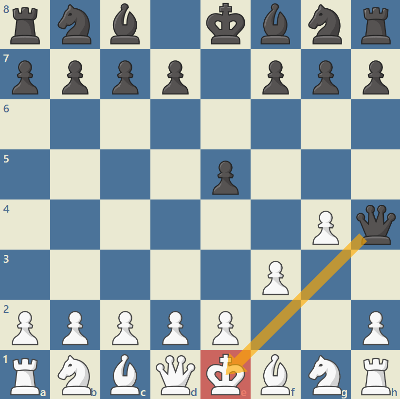

This page will show 3 of the most recognisable checkmates in Chess along with a brief description of them. These descriptions will be light and not overly detailed to allow a beginner to more easily understand them. However, more in-depth illustrations of each checkmate can be found all over the internet.
The checkmate on the left is known as the Fool's Mate. It is the fastest way to win/lose a game of Chess and is very interesting as it relies entirely on the lack of skill of your opponent, hence its name. It requires the player using white to set up their pawns like in the image to the right, over their first two moves. In between these moves, the black player must allow their Queen to move by moving the pawn in front of the King forward 1 or 2 squares. On black's second turn they can move their Queen diagonally to the position on the image to the right, putting the King in check. The King has nowhere to go outside of check and none of white's pieces can capture the black Queen or block the check, therefore it is checkmate and black defeats white in humiliating fashion.

The next checkmate I will cover is Smothered Mate, illustrated in the image on the right. This checkmate is considered a very cheeky one as it revolves around the opposing king (in this case white) to be completeley trapped by its own pieces with nowhere to move. It then requires the Knight to utilise its unique ability of jumping over other pieces to put the King in check. In the example on the right you can see that the black Knight has put the trapped, white King in check. The King can't move out of the check because of it being trapped by its own pieces and no white pieces can capture the Knight or block the check. Therefore, it is checkmate because the black Knight smothers the stuck, white King.

The final checkmate I will cover on this page is the Ladder Mate. It is the simplest checkmate on this list, as well as the easiest to execute. It gets the name it has because it involves moving your pieces in a fashion similar to climbing a ladder. The image on the right demonstrates the movement of each piece, each turn. The black pieces must repeatedly put the white King in check, forcing him down the board until he reaches the edge. The final black move will put the opposing white King in check and the King can't escape this check as the other black Rook covers the above rank (row), stopping the King from moving back up the board. As well as this, there are no white pieces that can capture the checking Rook or block the check, therefore it is checkmate. It is also worth noting that this checkmate can also be performed using any combination of Queen as well as Rook as they both have the ability to move orthogonally.